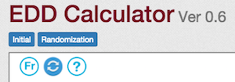
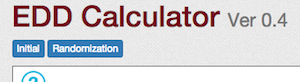
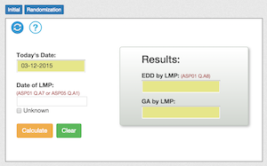
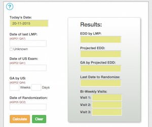
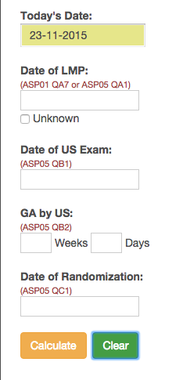
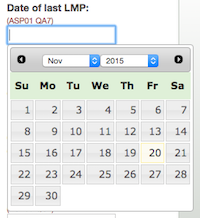
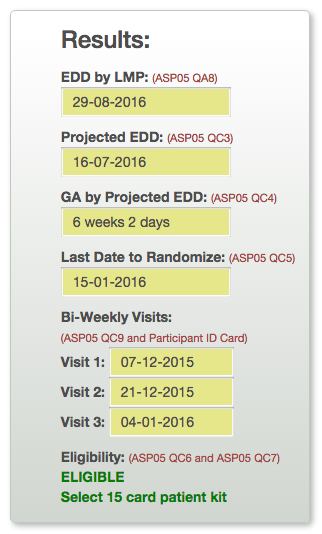

This calculator will help you calculate the various dates required as for the completion of the ASP forms, based on the Date of last LMP, Date of Ultrasound Exam, Gestational age by Ultrasound and the Date of Randomization.

The Calculator offers 2 languages of operation. The default language is English. The second language is French. Depending on what language is currently selected, you will see the alternate language icon on the top left hand corner. Click this icon to switch to a different language. For example. En is for English and Fr is for French. The Calculator will remember the last language used and will start up in that language the next time around.

The Calculator has 2 modes for calculating the necessary dates depending on which stages of the process you are on. There is the Initial stage (screening) and the Randomizationstage. Clicking either of the two top blue buttons will change the Calculator mode.

Initial mode
The Initial mode of the calculator will only calculate the EDD by LMP. This will be used during the completion of the APS01 form.
The screen on the left is what you will see when you click the [Initial] button at the top

Randomization mode
The Randomization mode of the calculator will do a more comprehensive calculation. This will be used during the completion of the APS05 form.
The screen on the left is what you will see when you click the [Randomization] button at the top

Calculation inputs
To make a calculation, just enter the input fields on the left and click the Calculate button.
All the fields are required except for Date of last LMP which is optional. If the Date of last LMP is unknown, then leave the field blank and tick the Unknown box. In which case the EDD by US will be used as the Projected EDD.
Just above each input field is an indication of where the data for the field should come from. Eg. ASP01 QA7 which is ASP01 form question A7.
Today's date is automatically set and cannot be changed. This date will be used to validate the Date of Randomization
To enter the date, you may either type in the date manually, such as 31-12-2015, or you can select from the calendar that popups up when you click inside the input field.
To start a new calculation, click the Clear button, which will clear the current inputs for you to select new dates.

Calendar
When you click inside the input box, the calendar will popup. To select the date, just click the appropriate number. To change the month or the year, click the Month/Year on top and select appropriately.
Clicking the left and right arrow button will increase/reduce the month.

Results
The results will be displayed as soon as you click the Calculate button. This values will be entered into the appropriate form that you are completing. The result will also display the first three Bi-weekly visits dates.
Important to note at the bottom of the result table for eligibility. Based on the calculation, it will either display
NOT ELIGIBLE. Do not dispense study medication or
ELIGIBLE. Select 15(14) card patient kit
Updating the EDD Calculator App

From time to time, there may be updates to this app. You can tell if a new update is available for your device is by comparing the version number at the top of the screen.
When you are connected to the internet, just visit the Calculator Url. Click this Sync icon  . This will initiate a check for updates and apply the changes if there are any.
. This will initiate a check for updates and apply the changes if there are any.
Add the App to the Home Screen on Android
To add this app to the Home screen as a bookmark, while you have the App open, click the browser setting menu, and select Add to Home Screen. This will put an icon on your Home screen. When you click the icon, it will open up this app, even if you are not connected to the internet.